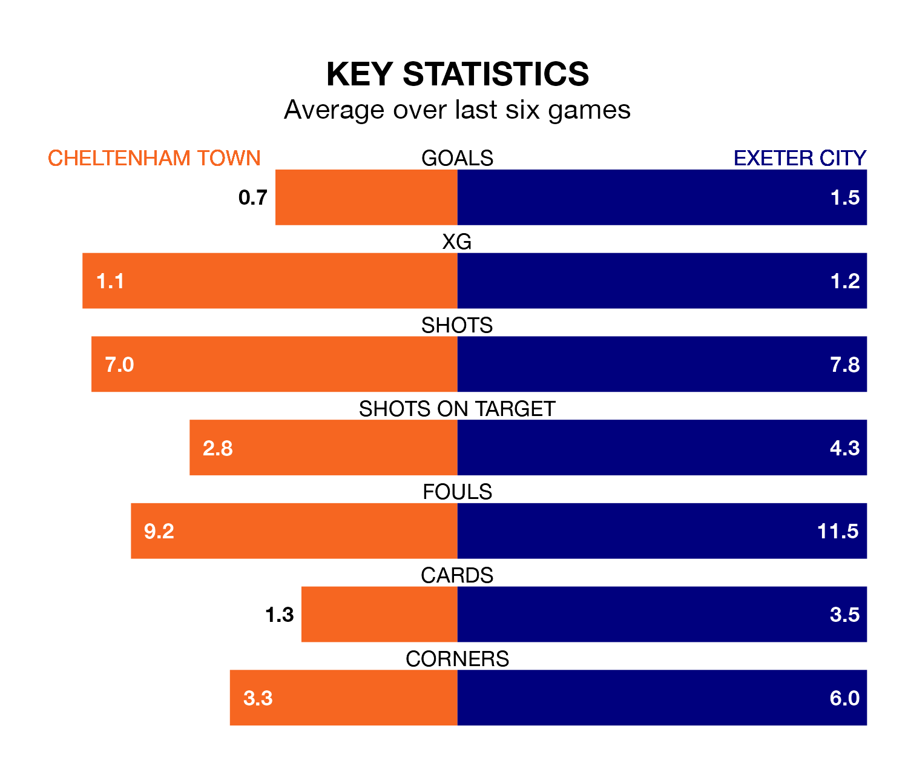

Struggling Cheltenham Town face Exeter City at the Completely-Suzuki Stadium on Monday looking to build on a win in their last league outing.
After securing all three points with a 2-1 victory over Fleetwood Town on Friday, the Robins sit 22nd in EFL League One.
They travel to play an Exeter side 16th in the standings, who were held in their last match, 1-1 against Charlton Athletic.
In the last 10 years, Cheltenham and Exeter have played each other on 15 occasions. Cheltenham won four of them, Exeter eight, and they drew three times.
On average, the Robins scored 1.3 goals and Exeter 2.1 in those matches.
Their last meeting was on September 16, when Exeter won 1-0 at home.
Cheltenham are in disappointing form in EFL League One, with one win and two draws from their last six games.
With two wins and three draws over that period, Exeter's form is better – they have taken nine points from 18, compared to Town's five.
With 32 goals in 38 games so far this season, the Robins are the league's joint-third-lowest scorers with 0.8 goals per game. And they are conceding at an average rate, letting in 51 goals at a rate of 1.3 per game.
City are also below average scorers, with 0.8 goals per game, compared to a league average of 1.3. They have conceded 1.3 goals per game.
Monday's match will be refereed by Steve Martin, who has taken charge of one EFL League One game so far this season, issuing no red cards and booking three players. He has not awarded any penalties.
He is yet to oversee a match featuring either Cheltenham or Exeter this season.
Updated: 10:31 (UTC), 31/03/24